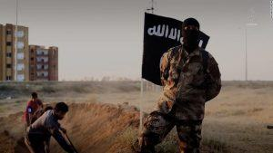
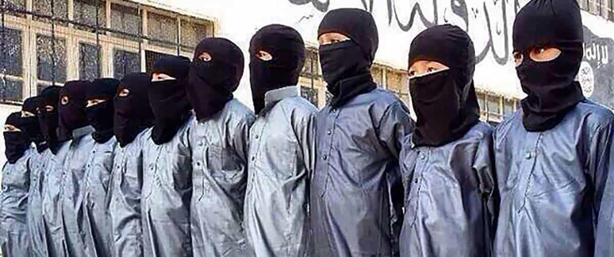

Quintus can be found at qcurtius.com. He is the author of the books On Duties, Thirty Seven, Sallust: The Conspiracy Of Catiline And The War Of Jugurtha, and other books. His work has been reviewed at Taki's Magazine. He can be followed on Twitter


Observers of political and military events in the Middle East cannot fail to notice the extreme violence of ISIS’s methods. Whether they are seeking to control a local population, or engaging in combat operations against an armed foe, ISIS members do not hesitate for an instant to adopt the most brutal tactics. In the cultural sphere the militant group has been similarly ruthless: it thinks nothing of obliterating the historical and cultural treasures of the regions it has occupied. Is there a method to this madness? Is it part of some coordinated strategic vision, or is it the blind ignorance of a group of nameless savages?
It would be a serious mistake to underestimate ISIS or its ideology. Any group that can attract members willing to fight to the death should have our undivided attention. Beyond this fact, ISIS’s own words show that there is indeed a consistent—if demented—logic in everything they do. Military planners must never forget this, just as they must never forget that everything North Korea does is done for a purpose.

It turns out that ISIS has done the world a favor by broadcasting its theories in a book called Managing Savagery: The Most Critical Stage Through Which The Umma Will Pass. This manifesto, published by Abu Bakr Naji and translated two years later by William McCants, lays out a detailed program on how to create the conditions necessary for the Islamic State.
We should understand that the word “savagery” used in this context does not refer to “terror.” It refers to non-Muslims and those Muslims to who not accept ISIS. In other words, ISIS considers itself “pure” and the rest of the world as “savages” that need to be tamed and civilized. No doubt every fringe group or collection of lunatics believes this, but the difference is that ISIS still controls considerable stretches of territory and can field fighters who are willing to fight to the last bullet.
What are the essentials of this doctrine of taming “savages”? It can be broken down into a three-step program. The first phase consists of frustrating and exhausting the enemy. ISIS recognizes that it can never contend with the full force of the world’s modern militaries in a face-to-face engagement. It therefore seeks to draw its opponents into long, drawn-out attrition wars that will sap the strength of their opponents. ISIS calls this the “power of vexation and exhaustion.”
There is nothing new in this: guerrilla forces have been doing this for centuries. The difference seems to be the depressing readiness of the US and its allies to take the bait. Here, for example, the author describes some of the reasons why the Soviet Union was defeated in Afghanistan:
This is exactly what happened to the Communist superpower when it was put in a military confrontation with a power weaker than itself by several degrees; it was not even comparable. However, (the weaker power) succeeded in exhausting it militarily and, even more important, it activated the elements of cultural annihilation in (the superpower’s) homeland:
– The dogma of atheism versus belief systems that believe in the next life and a God.
– Love of the world, worldly pleasures, and opulence versus individuals who had nothing to lose.
– Moral corruption, the least manifestation of which was that Russian soldiers or officers returned (home) — if they returned — and found that their wives had a child or relationship with someone else.
– Social iniquities clearly floated to the surface when the economic situation weakened because of the war. Then when money becomes scarce and monetary crises begin, the major thieves appear, especially if accurate accounting begins. [Text, p. 19]
The second phase of the ISIS strategy consists of establishing its own parallel governance structure in the areas it controls. What does this mean? It forces businesses and markets to stay open, it sets up Islamic courts and schools, and it “educates” the local population in the principles of Salafist Islam. Several years ago it even began issuing its own coinage and passports.
Even if these initiatives never achieved widespread acceptance, the point was made: We, the Islamic State, are an alternative to the existing corrupt governments. We can do better. Sadly, this sales pitch is not without its attractions in areas that were decimated by years of sanctions, war, and chaos.

The third phase of the ISIS program involves a consideration of how to expand the radical message into other countries. The idea is that bold, radical, and violent action by ISIS in the Middle East will trigger “spinoff” franchises in other parts of the world. This idea is not as ludicrous as it seems. Just as communist movements were attractive at one time in many parts of the Third World, so other forms of radicalism are now available to fill the void once occupied by communist insurgencies. These are some of the factors to be considered in “selecting countries” for insurgency:
Factors Considered When Selecting Countries:
With regard to the common links between states in which the regions of savagery can come into being, we notice that some or all of the (following) factors pertain to them:
– The presence of geographical depth and topography permits, in each separate state, the establishment of regions in it which are managed by the regime of the administration of savagery.
– The weakness of the ruling regime and the weakness of the centralization of its power in the peripheries of the borders of its state and sometimes in internal regions, particularly those that are overcrowded.
– The presence of jihadi, Islamic expansion being propagated in these regions.
– The nature of the people in these regions. This is a matter in which God has given preference to one place over another.
– Likewise, the distribution of weapons by people who are in those regions. [Text, p. 38]
All in all, there is a coherent program here amid much religious cant. It is organized, logical, and has been fanatically implemented where its members have been able to do so. Some international powers believe that they can use ISIS on a for-hire basis as a kind of battering-ram to take down secular regimes which they do not like (e.g., Syria). Those who believe this are deluding themselves. ISIS can be rented, but never owned; and once it is finished taking money from one hand, it will promptly devour that same hand. This must never be forgotten.